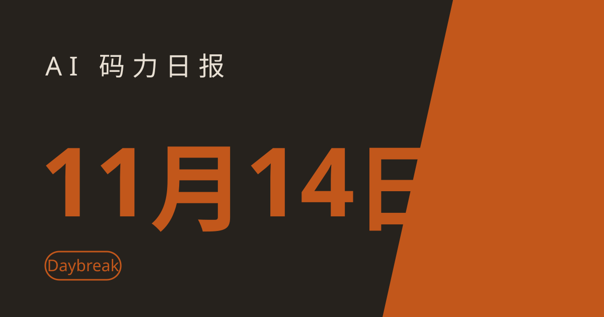

AI 码力日报 · 2026年11月14日

⚡ 一句话速览
- OpenAI 发了 Daybreak 安全双雄：Red Team 让 agent 替你渗透测试自己的网站，Defense Factory 让 agent 扫代码、写补丁，补丁合入前必须人审。
- Qwen4-Max 开放限时预览：阿里新旗舰 1M 上下文，11 月 11 日上线、11 月 25 日就退役，想试的只有两周窗口。
- 4,837 个 GitHub 账号被盗，CI 密钥正在被偷：wfx 攻击已在 1,806+ 个仓库里跑过窃取脚本，专门盯着 OpenAI、Anthropic、Gemini 这些 AI 服务的 key。
- Claude Fable 5.2 登顶 Artificial Analysis 智能指数：65 分超过 Gemini 4 Carbon 的 60 分，榜首又换人了。
🤖 今日 AI Coding 动态
OpenAI 发了 Daybreak 安全双雄：agent 替你攻、也替你补
跟你有啥关系：你的仓库迟早会被 coding agent 摸个遍——OpenAI 现在把同一套能力反过来卖给你：让 agent 先替你把漏洞找出来、补丁写好，人只负责点头。
11 月 12 日 OpenAI 在"Cyber at the Frontier"活动上发布 Daybreak Red Team 和 Daybreak Defense Factory。Red Team 是早期试用（要申请）：一组 agent 读你的源码和应用上下文，摸清攻击路径、验证漏洞是不是真能利用、再测补丁有没有修好。Defense Factory 是 ChatGPT 里的预览插件（要有 Daybreak 权限）：agent 接 Wiz、Snyk、Endor Labs 这些你已经在用的安全工具的发现，顺着代码追到根因，写出带测试的"可合入 PR"，工程师审过才能进生产。底座是 GPT-6 Cyber——OpenAI 称它在测试里找出了 81 个此前未知的 Firefox 高危漏洞、对 Linux 内核写出了 948 个可用的 exploit。两款产品都没公布价格。原文链接
Qwen4-Max 开放限时预览：1M 上下文，但 11 月 25 日就退役
跟你有啥关系：阿里新一代旗舰现在就能试，但这是一次有死期的试用——11 月 25 日 24:00（北京时间）之后这个预览模型直接退役，别在上面搭长期东西。
11 月 11 日阿里云上线 Qwen4-Max-Preview，定位是 Qwen4 家族的旗舰，主打编码、agent 和前端开发。官方规格：1M tokens 上下文、单次最多输出 393,216 tokens（思考和正文共用），支持文本、图片、视频输入和工具调用。入口只有两条：QwenCloud Token Plan 订阅（新加坡区，新用户 Lite 套餐 $3/月起，预览期内 credits 限时 8 折），以及 QwenWork、Qoder、Qwen App、QwenStudio 四个自家应用。老实说一句：阿里至今没公布任何官方跑分、模型卡、参数量和按量价格，27B、Flash、Plus 三个小弟也都没日期——这版就是让你上手摸一摸的，别拿它当生产底座。原文链接
Claude Fable 5.2 登顶 Artificial Analysis：65 分，榜首又换人了
跟你有啥关系：上周才说 Gemini 4 Carbon 是最强，这周榜首就换了 Claude——模型榜首的保质期现在按周算，选型别追榜首，追适合你任务的那个。
11 月 9 日发布的 Claude Fable 5.2 在 Artificial Analysis 智能指数上拿到 65 分，超过 Gemini 4 Carbon 的 60 分和自家 Claude Opus 5.5 的 59 分，登上第一。同一个榜单的另一面：Meta 的 Muse Ember 走的是另一条路——不拼最强，拼最便宜，编码类 agent 任务上花得少、干得还不差。两条路线摆在一起看才有意义：要天花板看 Fable 5.2，要量大管饱看 Ember。原文链接
Meta 发了最便宜的模型 Muse Ember：输入 $0.10 每百万 tokens
跟你有啥关系：agent 一天要调几百次小任务——读文件、跑测试、改个小 bug——用旗舰模型等于拿跑车送外卖，Ember 就是专门干这种重复活的便宜工。
11 月 9 日 Meta 发布 Muse Ember，定位"复杂推理的执行层"：agent 每天重复的工具调用、编码子任务、路由、抽取、长文档解析都归它。价格：输入 $0.10、输出 $0.50、缓存输入 $0.004 每百万 tokens，1M 上下文、最多输出 512K tokens。Meta 公布的对比表：Coding Agent Index 46 分，高于 Claude Haiku 5.5 的 37 分和 GPT-6 Luna 的 31 分；Terminal-Bench 4.0 是 40.9 分，对 Haiku 的 39.2 分。注意这是 Meta 自己的表，独立复现还没出来。搭配建议是规划用 Muse Wonder、执行批量交给 Ember。原文链接
Google Gemini Robotics 2.5：人形机器人上奔驰产线，零件分拣 96% 成功
跟你有啥关系：写代码的机器人大家见多了，能进真工厂干活的机器人是另一回事——这次是在奔驰正在生产的产线上，不是实验室。
11 月 10 日 Google DeepMind 发布 Gemini Robotics 2.5，视觉-语言-动作（VLA）模型，号称至今最强。亮点在真实产线验证：Apptronik 的 Apollo 2 人形机器人在奔驰德国辛德尔芬根和匈牙利凯奇凯梅特的在产生产线上做汽车零件 kitting（从散料箱里挑出金属支架、按车辆顺序装进分拣容器），成功率 96%。但要打个折扣：DeepMind 没公布试验次数、成功标准和人工干预频率，96% 是试点数据，不是量产指标。模型在 200 多项任务上比上一代成功率高 30%–100%、快 20%–30%，还开源了一个机器人安全基准 ASIMOV-Jailbreak。目前只向合作伙伴开放，没有公开 API 和价格。原文链接
wfx 攻击：4,837 个 GitHub 账号被盗，CI 里的密钥正在被偷
跟你有啥关系：这次偷的不是你的代码，是你 CI 里能调云、能调 AI 的所有密钥——包括 OpenAI、Anthropic、Gemini、Hugging Face、Cursor、Copilot、Codex 的 key。中招的仓库自己往往毫无察觉。
11 月 10 日 12:45 UTC 起，攻击者用盗来的 4,837 个 GitHub 账号凭证，向 61,764 个仓库发了标题为"docs: dependency audit notes"的试探 PR（分支名 wfx-docs），确认账号能不能写；能写的仓库就被塞进约 1,500 行的窃取脚本。Aikido 统计脚本在至少 1,806 个仓库里实际跑起来并外发了数据，SafeDep 则数到 8,093 个公开仓库收到过恶意提交。脚本专偷 Actions secrets、GITHUB_TOKEN、OIDC 令牌、云凭证文件和 AI 服务 key，还会在 AWS、Azure 里留后门——光轮换密钥可能不够。攻击者得手后约一分钟内就撤销改动、删掉运行记录和日志，工作流运行编号断号常常是唯一痕迹。这不是 GitHub Actions 本身的漏洞，是账号被盗后的滥用。详细自查方法见今天的教程。原文链接
OpenAI 把 API 推理搬进印度：本地处理、本地推理
跟你有啥关系：在印度做业务、数据不能出境的团队，调 OpenAI API 终于不用绕道了——延迟和合规两件事一起解决。
11 月 12 日 OpenAI 为印度增加了 API 的本地处理和本地推理（据 The Hindu 报道）。这是 OpenAI 区域化落地的一步：数据留在印度境内处理，对受数据驻留规则约束的印度客户是实质利好。价格与具体可用模型细节尚未公布。原文链接
🔧 工具更新日志
Codex CLI 0.168.0 + 0.169.0：侧边对话 + 模型供应商任选
11 月 13 日一天连发两版。最值得升级的是两点：一是模型供应商选择器——在 Sessions → Model providers 里给新对话挑默认供应商，已开的对话继续用自己存好的供应商，不会被全局切换带跑；二是在终端里开"侧边对话"：features.tui_workspace 打开后，主对话旁边能再开一个可拖拽分栏的副对话，0.169.0 又加了多标签页，重启后还能恢复，适合主线程跑长任务、副栏随时问个小问题。另外 0.168.0 还支持给音频模型附加录音、生成动画 GIF；0.169.0 收紧了 codex exec 在未信任目录的行为，项目配置和 MCP 服务器默认禁用，想用要显式加 --trust。两版都是 11 月 13 日发布（0.168.0 在 03:54 UTC，0.169.0 在 08:37 UTC），直接 npm install -g @openai/codex@latest 就行。更新日志
💬 社区热议
HN 790 分：高盛把 Claude Code 从交易员手里收走了，只留给工程师
11 月 2 日彭博报道、11 月 10 日 HN 帖冲到 790 分、416 条评论。高盛 10 月更新内部指引：Claude Code 和 GitHub 工具只留给约 12,000 名工程师和"strats"（横跨交易、量化和工程的混合岗），用了几个月的交易员和银行家全部收回。官方说法是"试验期结束，按生产力和风险管理来分配"。评论区吵的点很实在：一边是"编码工具就该给写代码的人"，另一边是交易员用它盯客户资金流、做头寸模型、写材料，收走等于把生产力工具当特权收回。背景是同一时期 Cursor 扩展市场还出过一个假冒 Claude Code 扩展（2.1.313 版，最多 5,000 人装过）。原帖
HN 265 分：Edge0-145B——145B 参数的开源模型，号称能在笔记本上跑
11 月 13 日 HN 热帖。Edge0 团队开源了 Edge0-145B 和 Edge0-120B，号称全球首个为端侧设计的 145B 参数开源模型：峰值内存 29GB、解码 80+ tokens/s，目标设备是 48GB 内存的 MacBook Pro 这类机器。官方数据：DeepSWE 1.1 得 64.6 分，高于 Qwen3.8-Flash-Next 的 58.7 分。评论区共识是"先别信满分"：所有关键数字都来自开发者自测，独立复现还没出来；但方向是对的——本地跑大模型这件事，正在从"能跑小模型"变成"能跑有用的模型"。原帖
HN 298 分：Ripple-65B——65B 参数的稠密模型，编码跑分超过 500B+ 的 MoE
11 月 13 日 HN 热议的另一条。Ricursive Intelligence 11 月 4 日发布的 Ripple-65B Preview：65B 稠密 Transformer，12 万亿 tokens 从头训练，Apache 2.0 开源权重。官方称 Terminal-Bench 2.1 得 80.52 分，超过 Reflection Beam 501B（80.1）、Meta Muse Spark Open 816B（76.4）这些 8–15 倍体量的 MoE 模型；NVFP4 版约 57GB，一台 DGX Spark 就能跑。评论区提醒了两点：用的是 Terminal-Bench 2.1（不是最新版），而且 MMLU、GPQA 这些通用项它反而落后于那几个大模型——这是个专精编码的模型，不是全能选手。原帖
"100% AI 强制令一年后，没人能看懂我们的代码了"
一篇发在 r/ClaudeCode 的匿名帖，11 月 7 日发出，11 月 10 日冲上 HN 首页，至今还在被转发。讲述者说：团队被强制 100% 用 AI 写代码一年后，代码库膨胀到 3 倍，两名 reviewer 离职，管理层悄悄让人类重新开始手写代码——"没人能解释大部分代码是怎么工作的"。帖子本身是匿名的、没点名任何公司，别当个案定论；但它戳中了一个真问题：agent 写代码的速度，正在超过团队理解代码的速度。评论区最扎心的一句共识是：review 能力跟不上生成速度，技术债不是少了，是换了个更难还的形态。原帖
Matt Pocock 开源 39 个 agent skills：让 AI 先拷问你，再写代码
11 月 13 日 HN 热帖。Total TypeScript 作者 Matt Pocock 发布 39 个 MIT 协议的 agent skills，遵循开放的 Agent Skills 标准，能在 Claude Code、Codex CLI 等 30+ 工具里跑。思路是反过来的：不是让 AI 直接写，而是先让 AI 像面试一样拷问你——需求、边界、验收标准都问清楚，再把答案转成 spec、ticket、测试和代码。14 个管"计划和访谈"，14 个管"构建、review 和交接"。想少返工的人，可以直接从他的仓库装。原帖
📱 AI 应用新品
Templify AI：不会剪辑的人，也能剪出像样的视频
Product Hunt 11 月 13 日当日第一（294 票、93 条评论）。一句话：iPhone 上的视频、照片、轮播图全能编辑器，AI 剪辑、节拍同步转场、自动字幕、抠图、滤镜和 AI Studio 全包。解决什么问题：发社交内容要配视频，但你不会剪辑、也不想学。免费就能用，Pro 订阅解锁更多。适合：做内容、发短视频，但剪辑是短板的人。产品页
Trainn MCP：跟 AI 聊聊天，产品视频就出来了
Product Hunt 11 月 13 日当日第一（截至当天 20:43 UTC）。一句话：在任何 AI 对话里接上它，就能直接生成产品视频和课程。不用开剪辑软件，不用写分镜。适合：要给产品做演示视频、做教程，但不想走传统剪辑流程的独立开发者和小团队。产品页
🐑 今日羊毛
Qwen4-Max 限时 8 折：新用户 $3/月起试阿里新旗舰
一句话：Qwen4-Max 预览期内 credits 限时 8 折，Token Plan 新用户 Lite 套餐 $3/月起。
- 怎么薅：去 QwenCloud 开 Token Plan（新加坡区），新用户选 Lite 套餐（$3/月起），模型选
qwen4-max-preview；或在 Qoder、Qwen App 里直接试直达链接 - 有效期：截至 2026 年 11 月 25 日 24:00（北京时间），预览结束模型直接退役，过期不候
- 适合谁：想第一时间摸阿里新旗舰、又不想等正式版的人
SambaNova SambaCloud 免费层：不用绑卡，直接调 API
一句话：SambaNova 11 月 13 日新上的 SambaCloud 免费层，限速 API 访问，不用绑支付方式。
- 怎么薅：注册 SambaCloud 账号，不绑卡就能用免费层调模型（有速率与每日 token 上限）直达链接
- 有效期：长期免费层（截至撰写时）
- 适合谁：想白嫖一个能跑大模型的推理 API 做实验、做小项目的人
Nscale 新用户 $5 免费额度：无服务器推理先试再说
一句话：Nscale 给新注册的 Console 账号发 $5 免费额度，用来跑无服务器推理。
- 怎么薅：注册 Nscale Console 新账号，领 $5 额度直接跑 serverless inference直达链接
- 有效期：新用户专享（截至撰写时）
- 适合谁：想试 Nscale 推理服务、又不想先掏钱的人
⭐ 今日 GitHub 热门项目
GoogleChrome/modern-web-guidance-src
一句话：Chrome、Edge、Firefox、MDN 四家联合出品的"现代 Web 技能包"，直接喂给你的 coding agent，让它别再写过时的前端代码。解决什么问题：模型训练数据里全是祖传写法，agent 一写前端就给你套 jQuery 时代的方案——这套技能覆盖 250 个现代 Web 特性（容器查询、锚点定位、View Transitions、Popover API 等），附带浏览器兼容数据，还能扫你的代码库找 legacy 写法。⭐ 约 4,736（截至撰写时），本周新增约 1,875。适合：让 agent 写前端、又受够了它写过时代码的人。装法：npx modern-web-guidance@latest install。项目地址
alibaba/open-code-review
一句话：阿里内部用了两年的 AI 代码评审助手开源了，读 Git diff、按行给评审意见。解决什么问题：通用 agent 审代码要么漏文件、要么行号漂移、要么 token 烧得厉害——它用"确定性工程 + agent"混合架构：文件选择、打包、规则匹配这些不能错的环节由工程逻辑兜底，模型只负责动态判断。官方基准（50 个开源仓库、200 个真实 PR、10 种语言）：同样模型下精度和 F1 明显高于 Claude Code，token 只用约 1/9。⭐ 约 50,547（截至撰写时）。适合：想把 AI code review 接进 CI、又怕误报太多的人。装法：npm install -g @alibaba-group/open-code-review，然后 ocr review。项目地址
heygen-com/hyperframes
一句话：写个网页，就得到一段视频——HTML 直接渲染成视频，专为 AI agent 准备。解决什么问题：agent 能写代码、能写文案，但做视频还得靠人开剪辑软件；Hyperframes 让"出视频"变成"出网页"这个 agent 本来就会的活。⭐ 约 84,000（截至撰写时），一周涨了约 3,800。适合：想让 agent 一条龙产出带画面的内容、做产品演示的人。项目地址
🤗 Hugging Face 热门模型
collinear-ai/cwe-bench
HF 11 月 13 日涨幅榜第二（+25.5%，2.4K→3K 下载）：防御性安全任务数据集，专门用来测模型能不能发现和修复真实代码里的 CWE 类漏洞。能干嘛：搭安全评测、训防守型模型都用得上，正好配今天的 wfx 事件做自查基准。下载量约 3,000（截至撰写时）。适合：做代码安全、agent 防护评测的人。模型页
cais/hle
Humanity's Last Exam（人类最后考试），HF 11 月 13 日涨幅榜第三（+6.4%，56.3K→59.9K 下载）：多模态高难度基准，专门用来卡前沿模型的上限。能干嘛：别拿它测日常模型——它是给顶级模型准备的"天花板试金石"，新模型发布必跑的对照之一。下载量约 59,900（截至撰写时）。适合：跟踪前沿模型能力上限、做模型评测的人。模型页
🛠️ 值得一试的工具：beacon.sh
是什么：给 AI coding agent 做的开源记忆层——把 Claude Code、Cursor、Codex、OpenCode 等 20+ 工具里的 agent 会话，全部收进一条统一时间线，沉淀成项目知识，下次 agent 直接调用。
解决什么痛点：换个工具，以前教 agent 的东西全得重说一遍；beacon 把会话里的纠错、调试套路提炼成可复用的 skill，人审一次就能复用。免费额度：Cloud 免费档 $0，覆盖 20+ agent、MCP 会话搜索、50 条 findings；Pro $20/月起，agent 自己存取记忆要 Pro 才有。
** verdict：** 值得试——开源 MIT 协议、本地 JSONL 落盘、免费档就能用 MCP 搜历史；唯一要注意的是安装时默认选了 Beacon Cloud 转发，选 Local 才能保证数据不出本机。介绍
🎓 3 分钟小教程：三步自查你的仓库有没有中 wfx 的招
前置条件：一个 GitHub 账号、装了 gh CLI（或直接用网页版），以及你有仓库的查看权限
- 查有没有试探 PR（可复制）：
bash gh pr list --search "wfx-docs" --state all --limit 20网页版也行：仓库 → Pull requests → 搜wfx-docs，或搜标题docs: dependency audit notes。有，就说明那个账号已被盗用。 - 查 Actions 运行编号有没有断号：
bash gh run list --limit 30编号不连续、中间缺了几号，大概率是攻击者删了运行记录和日志——重点查那段时间前后的 workflow 文件有没有被改过。 - 轮换一切可能泄露的密钥：仓库 Settings → Secrets and variables → Actions 里全部轮换；再去 AWS、Azure 控制台查有没有多出来的角色或密钥——wfx 的脚本会在云上留后门，光换密钥不够。
预期效果：三分钟摸清自己的仓库有没有中招；一旦确认中招，按"账号被盗"处理：先废掉该账号的全部 token，再轮换所有密钥，最后查云上的持久化痕迹。
数据截至撰写时，仅供参考。